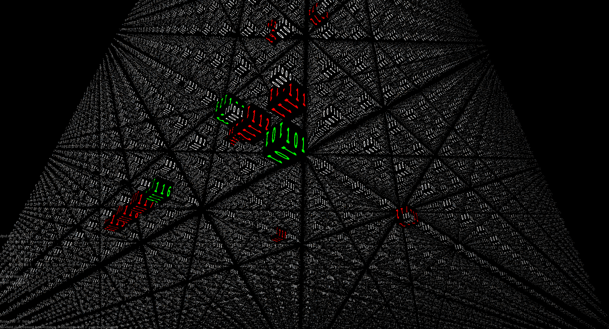

Projects
Protein Structure Simulation and Searching Algorithms
Easily simulate the change of dipole moments of complex protein structures and provide a 3D UI in OpenGL. There are also several searching algorithms implemented to find protein structures that satisfy user defined logic functions. Download here.


Papers | 
Work
-
Robert Bosch GmbH (Jul 2017 - Aug 2018)
Did an internship and then transferred to full-time for a few months.